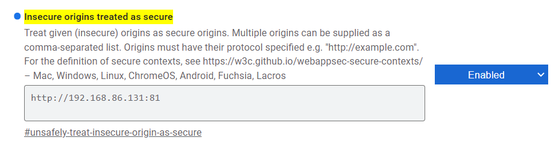

Screenshot
Description
This widgets creates a screenshot of the client visualization and stores it on the PLC or the client device. The widget is dervived from the button widget and therefore shares all its settings, actions and events.
Windows / Linux
Due to browser security restrictions the screen access is blocked for standard HTTP connections which is the default for mappView. mappView must be changed to HTTPS access or the HTTP URL must be added to the browser as an exception. Use the following line in the browser URL to access the flag
chrome://flags/#unsafely-treat-insecure-origin-as-secure

Add the mappView URL and enable the flag.
When the screenshot is called it will open a window that will ask the user what to share.

Select the tab or region for the screenshot and hit the Share button.
B&R Panels
Due to browser security restrictions the screen access is blocked for standard HTTP connections which is the default for mappView. mappView must be changed to HTTPS access or the HTTP URL must be added to the browser as an exception. On B&R panels the screen capture must be enabled in the panel settings. This option is available starting with firmware 1.6.x. In the web settings enable screen capture and optional supress the security warning for the screen capture and server certificate.

Usage
This widget requires mapp File (see Automation Studio help GUID f5ac430b-e0ca-4320-bcd0-b7e28a087f77). Make sure that there is a valid mpfilemanager configuration. Only the configuration is required, no additional task or function block must be added to the project. The libraries MpFile and MpServer are also required.
Additional Actions
The widget derives all actions from the button widget.
Screenshot2Client This action creates a screenshot and saves it to the client device.
Screenshot2Plc This action creates a screenshot and saves it to the PLC. This action needs two parameters
- filePath - Full path to the screenshot image including the filename and extension.
Example
USER/screenshot.png USER is the storage medium specified in the target system configuration.
Additional Events
The widget derives all events from the button widget.
FileSaved
This event is called when the Screenshot2Plc has saved the screenshot successful. Returns the full path of the file (filePath).
FileDownloaded
This event is called when the file was downloaded with Screenshot2Client successful.
OnError
This event is called when a screenshot was not successful. Returns the error number (result). Most error numbers are generated from underlying components and can be found in the Automation Studio help. The widget can also generate the following custom error numbers.
| Error No | Description |
|---|---|
| 10000 | Unknown error. Can occur when the user aborts the screenshot |
| 10001 | HTTP permission. This error occurs when the widget can not access the screen. Use HTTPS access or use flag as described above. |
Requirements
Tested with
- Automation Studio 4.11
- B&R T-Panels firmware 1.6.x
- Minimum tested version 5.15
- Expected to work with later version
May also work with lower version: YES
Revision History
Version 4
- Fixed save to PLC did not work on pre-cached pages
Version 4
- Changed device name and file name to filePath to be compatible with other widgets
- Removed obsolete code
- Add error messages to PLC logger
Version 3
- Widget is now compatible to B&R T-Panels
Version 2
- Optimized screenshot widget
Version 1
- First release